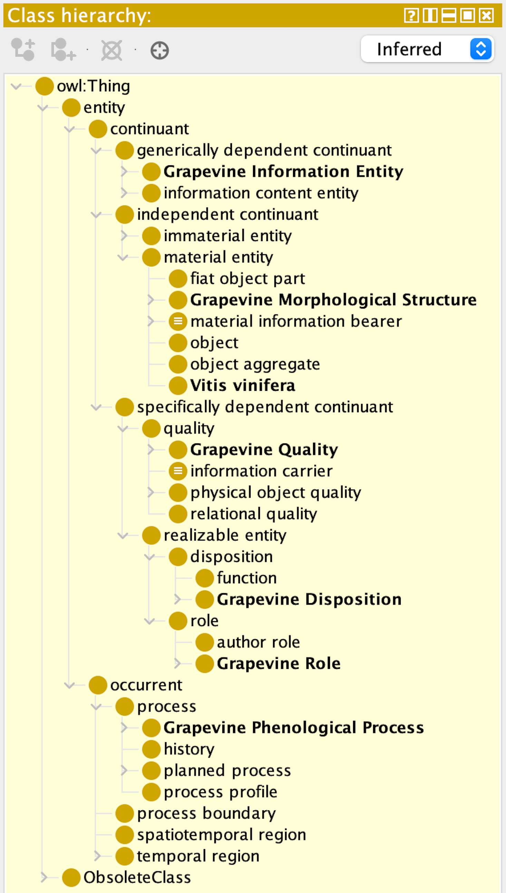
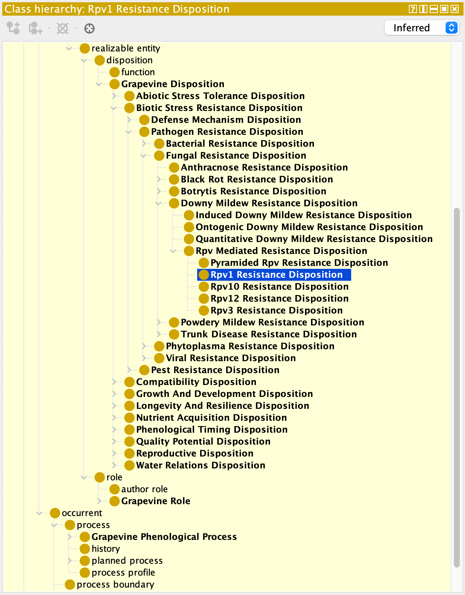
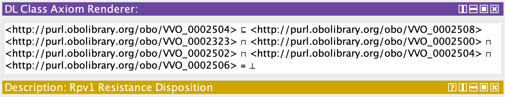
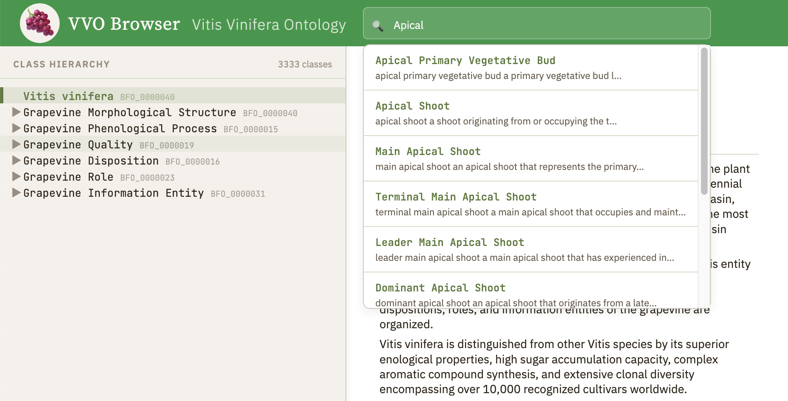

Technical Overview
The VVO (Vitis Vinifera Ontology) is a controlled vocabulary that formally describes the morphological structures, phenological growth and developmental stages, quality parameters, dispositions, roles, and information entities of Vitis vinifera L., the common grapevine. It comprises 3,333 annotated classes organized in a strict taxonomic hierarchy.
The goal of the VVO is to establish a semantic framework for meaningful cross-species queries across biological properties of Vitis vinifera, enabling interoperability with other plant-related ontologies and biological databases.Foundational Architecture
VVO is aligned with the Basic Formal Ontology (BFO 2020), the upper-level ontology adopted by the OBO Foundry as its standard framework for categorizing entities in the biomedical and biological sciences. Every class in VVO is traceable through its parent hierarchy to a BFO 2020 category, ensuring formal consistency and cross-ontology compatibility.
The root class, Vitis_vinifera, is aligned with BFO_0000040 (material entity). In accordance with BFO alignment requirements, the six top-level categories root directly under their respective BFO parents rather than under Vitis_vinifera — reflecting the ontological commitment that the entire vocabulary describes aspects of this single species. VVO maps classes to
- BTO (BRENDA Tissue and Enzyme Source Ontology),
- GO (Gene Ontology),
- NCBITAXON (NCBI taxonomy database),
- PATO (Phenotype And Trait Ontology),
- PO (Plant Ontology)
Class Organization
The 3,333 classes of VVO are organized into six top-level categories, each aligned with a distinct BFO 2020 category:
|
 |
Grapevine Morphological Structure (BFO_0000040 – material entity) encompasses 773 classes describing the spatially extended anatomical parts of the grapevine. This category covers all vegetative and reproductive organ systems from the root system through the permanent woody framework to the annual shoot system, including leaves, tendrils, inflorescences, and berries. Classes are organized by organ system and further refined by tissue and cellular level.
Grapevine Phenological Process (BFO_0000015 – process) comprises 464 classes modeling the temporally ordered developmental stages of the grapevine. This category is systematically aligned with the BBCH extended scale for grapevine (Lorenz et al. 1995), the internationally accepted framework for describing crop phenological stages. Subclasses capture individual phenophases and their sub-stages, from winter dormancy through bud burst, shoot growth, flowering, fruit set, berry development, veraison, ripening, leaf senescence, and return to dormancy.
Grapevine Quality (BFO_0000019 – quality) contains 792 classes representing the measurable and observable attributes of grapevine structures and processes. These include morphological qualities such as size, shape, and color, as well as physiological parameters relevant to viticulture and enology.
Grapevine Disposition (BFO_0000016 – disposition) comprises 404 classes describing the inherent tendencies and capacities of grapevine entities to behave in particular ways under specific conditions. This category covers biotic and abiotic stress resistance dispositions, including pathogen resistance, drought tolerance, and cold hardiness profiles.
Grapevine Role (BFO_0000023 – role) contains 352 classes capturing the functions that grapevine entities fulfill within viticultural contexts. This includes rootstock and scion roles, their vigor-modifying and disease-resistance properties, and their contributions to grafted vine systems.
Grapevine Information Entity (BFO_0000031 – generically dependent continuant) encompasses 555 classes describing the information artifacts associated with Vitis vinifera, including cultivar designations, ampelographic descriptors, BBCH stage codes, and related classification systems.
Annotation Structure
Every class in VVO carries a uniform set of nine annotation properties:
- classification path,
- class name,
- a genus-differentia definition grounded in the viticultural and plant biological literature,
- alternative terms in both English and German (bilingual EN/DE),
- a concrete example of usage referencing specific cultivars, regions, and measurable parameters,
- an editor note providing disambiguation guidance and additional scientific context,
- external ontology mappings to BTO, GO, NCBITAXON, PATO, PO (SKOS),
- curation status metadata (IAO),
- and traceable definition sources citing the primary scientific literature.
The bilingual annotation reflects the central role of both English and German in the
international viticultural research community. The total raw annotation volume amounts
to 17.3 megabytes of structured text.
Reproductive Active Bud: Annotation example
Rpv1 Resistance Disposition: position in the class structure
|
 |
Rpv1 Resistance Disposition: OBO Foundry-compliant numeric IRIs
|
 |
Technical Infrastructure
VVO annotations are maintained in a structured YAML format and three Java classes transform the annotated class data into a single OWL/XML-encoded ontology file to 287,818 lines of code. The VVO Browser, a static single-page application built with HTML, CSS, and JavaScript, provides interactive access to the full class hierarchy and annotation content without requiring a web server or backend infrastructure.
It features a collapsible tree navigation panel, a detail panel displaying all annotation properties, and a client-side full-text search engine supporting partial matching across class names, alternative terms, and definitions in both languages.The VVO Browser features an incremental search function with partial matching. As the user types a query into the search field, matching classes are displayed in real time, filtered against both class labels and definitions. This allows researchers to locate specific morphological structures, phenological stages, or quality parameters without needing to know the exact class name — typing "Apical," for instance, immediately surfaces all related shoot and bud classes in the hierarchy.
|
 |
Scientific Context
Vitis vinifera L. is the most widely cultivated fruit crop globally, with over 10,000 recognized cultivars grown across all temperate and Mediterranean climate zones. Despite its economic and cultural significance, no formal ontology had previously been developed specifically for this species. VVO addresses this gap by providing a comprehensive, BFO-aligned knowledge representation that bridges ampelography, plant phenology, viticultural science, and enology. VVO thus represents virgin territory in formal viticulture knowledge representation, offering a foundation for computational reasoning about grapevine biology that did not previously exist.
Development and Perspective
VVO was developed through a sustained collaboration between deep domain knowledge in grapevine biology, viticulture, and plant phenology, and well-founded ontology engineering expertise. The annotation process drew on canonical references in the field, including Keller (2020), Mullins, Bouquet & Williams (1992), Pratt (1971), Lorenz et al. (1995), and the OIV Descriptor Lists, among many others. Each class definition was crafted to satisfy genus-differentia form, ensuring that every class is defined in terms of its parent class and a distinguishing characteristic.
The resulting ontology is intended to support applications in precision viticulture, climate adaptation research, cultivar characterization, and phenological modeling. As a BFO-aligned resource, VVO is designed to interoperate with established ontologies such as the Plant Ontology (PO), the Gene Ontology (GO), and the Environment Ontology (ENVO), thereby enabling integrative queries across species and domains.🍇